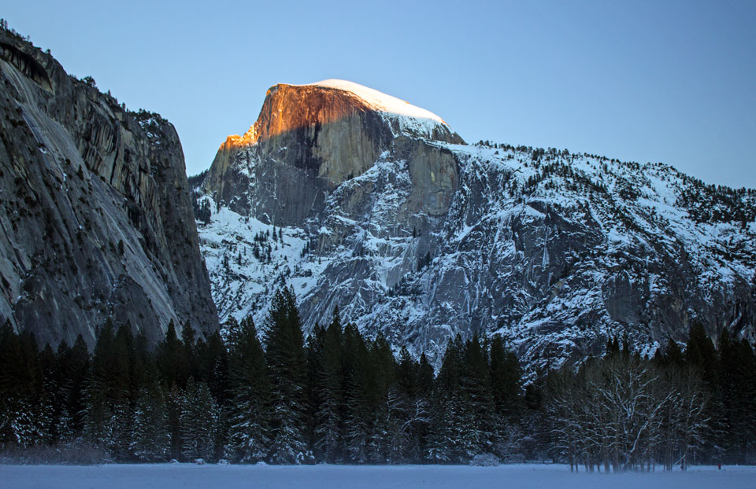

Yosemite National Park
Yosemite National Park Сьерра-Невада (/joʊˈsɛmɪti/ yoh-SEM-it-ee[5]) is a national park spanning portions of Tuolumne, Mariposa and Madera counties in Northern California.[6][7] The park, which is managed by the National Park Service, covers an area of 747,956 acres (1,168.681 sq mi; 302,687 ha; 3,026.87 km2)[2] and reaches across the western slopes of the Sierra Nevada mountain range.[8] On average, about 4 million people visit Yosemite each year,[3] and most spend the majority of their time in the 5.9 square miles (15 km2) of Yosemite Valley.[9] The park set a visitation record in 2016, surpassing 5 million visitors for the first time in its history.
Designated a World Heritage Site in 1984 , Yosemite is internationally recognized for its granite cliffs, waterfalls, clear streams, giant sequoia groves, lakes, mountains, glaciers, and biological diversity.[9] Almost 95% of the park is designated wilderness.[11] Yosemite was central to the development of the national park idea. First, Galen Clark and others lobbied to protect Yosemite Valley from development, ultimately leading to President Abraham Lincoln's signing the Yosemite Grant in 1864. Later, John Muir led a successful movement to establish a larger national park encompassing not just the valley, but surrounding mountains and forests as well—paving the way for the United States national park system.
Yosemite is one of the largest and least fragmented habitat blocks in the Sierra Nevada, and the park supports a diversity of plants and animals. The park has an elevation range from 2,127 to 13,114 feet (648 to 3,997 m) and contains five major vegetation zones: chaparral/oak woodland, lower montane forest, upper montane forest, subalpine zone, and alpine. Of California's 7,000 plant species, about 50% occur in the Sierra Nevada and more than 20% within Yosemite. There is suitable habitat for more than 160 rare plants in the park, with rare local geologic formations and unique soils characterizing the restricted ranges many of these plants occupy.[9]


Войдите или зарегистрируйтесь,
чтобы оставить комментарий